- Overview
- Topology
- IP Table
Executive Summary
Project Video Demonstartion (Google Drive Link)
Topology Diagram
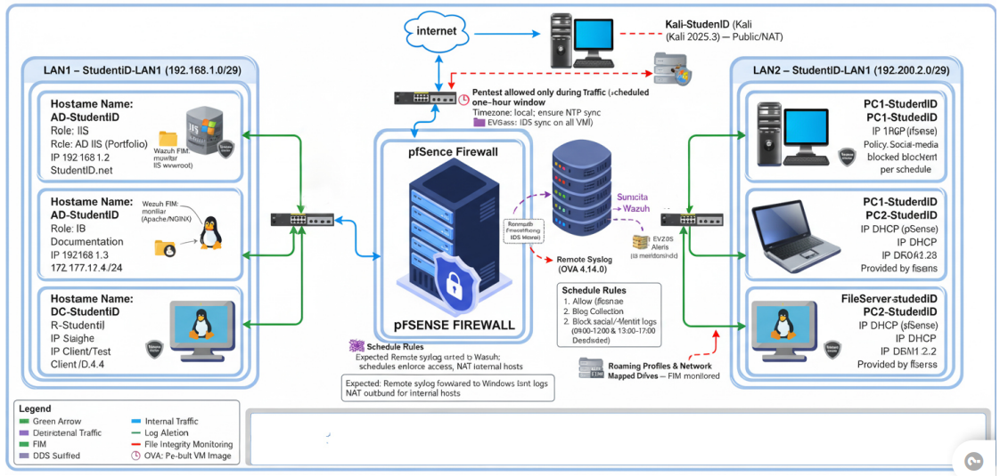IP Allocation
Network
Name
Subnet
Gateway
DHCP
Active Directories Users and Computers - ADUC
In this configuration, I created Active directories for IT, HR, Fiance, and Student as active directory. I also added some users in each directory, so later I can join some client and log in as one of user I created.
Active Directory
Users
Group Policy
Group Policy has configured on this LAB for purpose of security, such as lockaout account after failing schedured times and user will change password on each login.
Mapped-Drive
On window server, mappeddrive configured, so that each joined PC/Client will have access to the drive created from server.
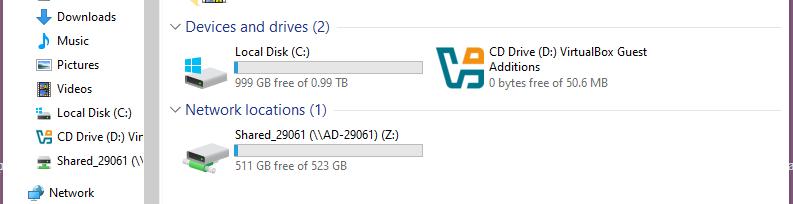IIS
IIS installed on Window server it helped to host my portfolio webapge on server, so clients and users can access the webapage by browsing.
Roaming/Mapped Folder
Roaming, this was folder created aiming to follow each user, so where he/she logged on any PC/Client, the folder was linked to his profile so that any PC user join, the folder will be there.
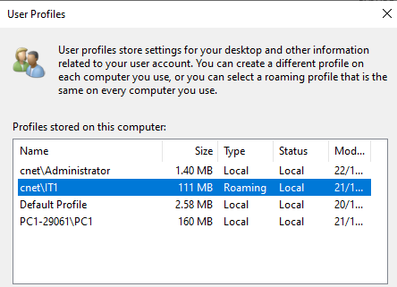Linux Server
Ubuntu live server was installed on this LAB, it's purpose is to provide the DHCP
IP address to PC/Clients that are coonnected on LAN21(192.168.1.1), this doen by installing isc-dhcp-server.
Apache and nginx installed on Linux Server/ubuntu live server,
so that I can be able to host documantaion website on Linux Server
# subnet 192.168.1.0/290
subnet 192.168.1.0 netmask 255.255.255.248{
range 192.168.1.2 192.168.1.6
option routers 192.168.1.1;
}
Static IP Address on Linux Server
subnet 192.168.1.0 netmask 255.255.255.248{
range 192.168.1.2 192.168.1.6
option routers 192.168.1.1; }
network:
version: 2
ethernets:
enp0s3:
dhcp4: no
addresses:
- 192.168.1.3/29
gateway4: 192.168.1.1
nameservers:
addresses: [8.8.8.8, 1.1.1.1, 192.168.1.3, 192.168.1.2]
IP DHCP POOL ON LAN1 CONFIGURED ON Linux Server
option domain-name "docs.29061.f25";
option domain-name-servers 8.8.8.8;
option domain-name-servers 192.168.1.3;
default-lease-time 600;
max-lease-time 7200;
authoritative;
subnet 192.168.1.0 netmask 255.255.255.248 {
range 192.168.1.5 192.168.1.6;
option routers 192.168.1.1;
option subnet-mask 255.255.255.248;
option broadcast-address 192.168.1.7;
option domain-name "docs.29061.f25";
}
Documentation Site Link
pfSense
PfSense: This device Helped fo setting up Interfaces and provide an IP address on Clients connected to 29061-LAN2 via DHCP. Moreover, Pfsense used to set rules and schedules that govern this LAB
Interface IP address
These are IP of the interface on pfSense
29061_LAN1 Interface(lan, em2) 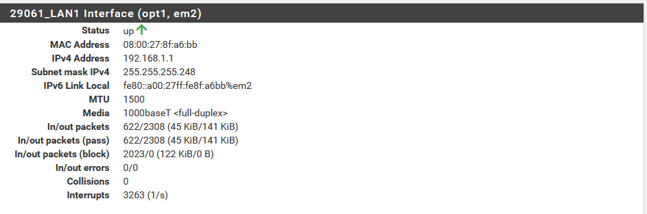
29061_LAN2 Interface(lan, em1) 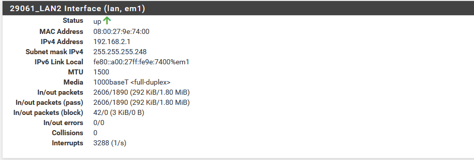
DHCP POOL 29061-LAN2
pfSense Used Dynamic host Configuration Protocal To privide IP address on Cleint Dynamically. Belowe is the Image showing the DHCP network usable IPs, and IPs range.
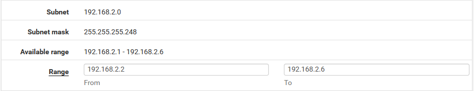Firewall Rules and Schedules
pfSense used Firewall rules, to govern how both lan interact each other, morever hw the access internet. On other side, firewall schedule, helped to schedule how often the device will have access some features, to give permission at specific time. Below are images showing that.
Rules
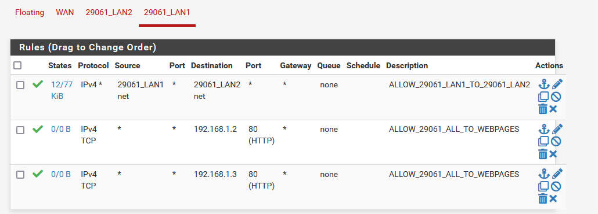Schedules
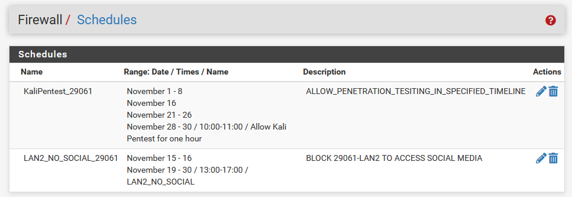Wazhu Server
Wazuh is deployed in this project as a Security Information and Event Management (SIEM) and Host-based Intrusion Detection System (HIDS). Its primary purpose is to collect, analyze, and correlate security events from different systems across the network, including Linux servers, Windows endpoints, pfSense logs, and Suricata IDS alerts. By centralizing all logs and applying real-time detection rules, Wazuh allows administrators to identify threats quickly, detect suspicious activities, and respond before they escalate into major security incidents.
Static IP address on wazuh
nano ifcfg-eth0
DEVICE=eth0
ONBOOT=yes
BOOTPROTO=none
TYPE=Ethernet
NM_CONTROLLED=no
PREFIX=29
IPADDR=192.168.1.4
GATEWAY=192.168.1.1
DNS1=192.168.1.2
DNS2=192.168.1.3
Wazuh Dashboar
I have Agent that control Window Server
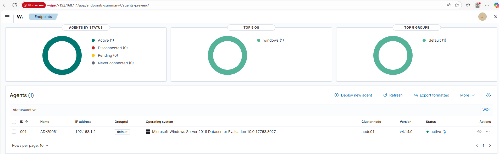NTOPng Dashboard
NTOPng was installed on pfSense packages to monitor network traffic
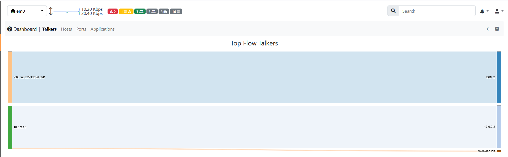LAN2 Interface Traffic
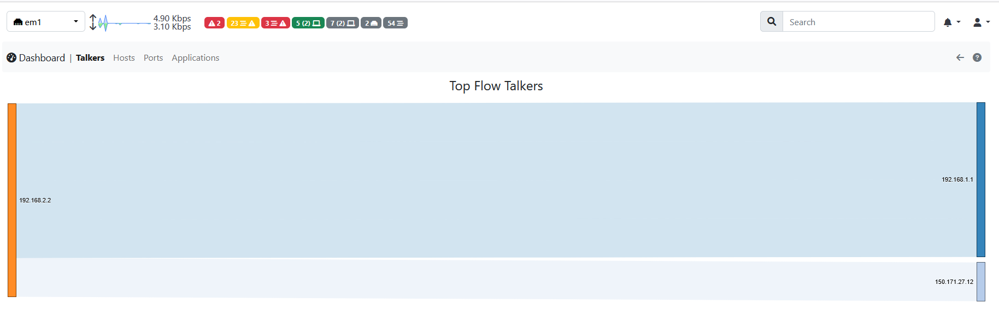LAN1 Interface Traffic
Backup And Restore
A file Config.xml created to store data on pfSense
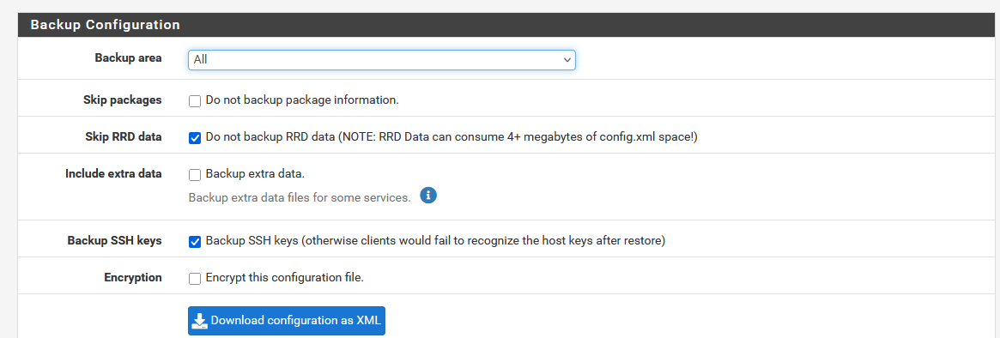OpenVPN
OpenVPN configured to allow some client to connect to private network.
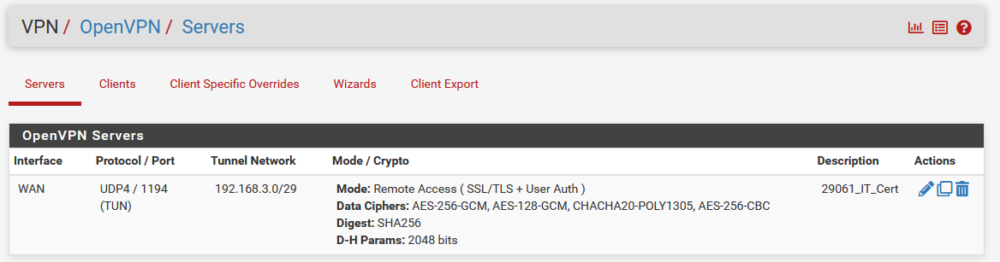User connecting to VPN succefuly.

Suricata ID's
Suricata was included in the project as the Intrusion Detection and Intrusion Prevention System (IDS/IPS) for the network. Its main purpose was to inspect all traffic flowing through pfSense (LAN1, LAN2) and detect suspicious, malicious, or abnormal activity. Suricata provides deep packet inspection and uses rule-based signatures to alert on threats such as port scans, malware communication, exploit attempts, brute-force traffic, and protocol anomalies.
Suricata EVE Json and location of LAN1
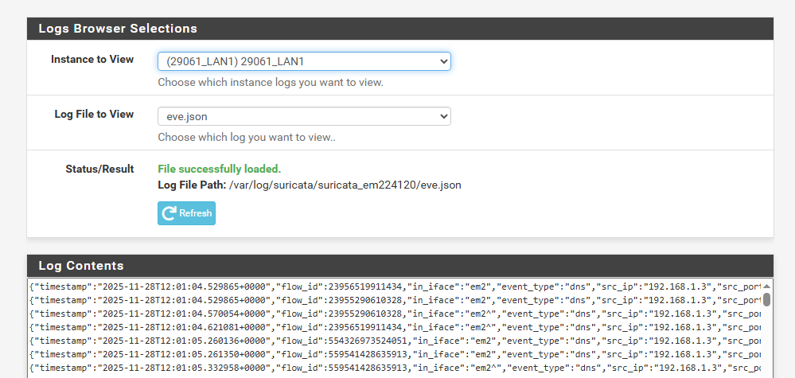Suricata EVE JSON and Location of LAN2
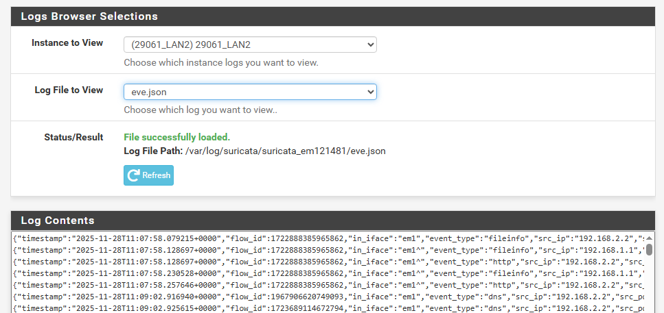Project Summary
This project involved designing, building, and securing a fully functional enterprise-grade network infrastructure using virtualized systems. The environment included a pfSense firewall acting as the core perimeter device, multiple LAN segments, Active Directory services on Windows Server, a Linux documentation and DNS server, a Kali penetration-testing machine, and an integrated Wazuh SIEM for real-time monitoring. Each component was configured to work together, providing a realistic simulation of a modern corporate network with segmentation, security enforcement, monitoring, and centralized management.
The project included deploying and securing DNS, DHCP, VPN access, HTTPS web documentation, Linux-based DNS zones, Suricata IDS/IPS rules, NTOPng network analytics, and automated backup solutions. Additional tasks involved configuring network services on Windows Server such as DNS and AD DS, building detailed firewall rules, performing penetration tests from Kali, and capturing Wazuh alerts for correlation and detection. All tasks were documented step-by-step with screenshots, logs, and configuration files to demonstrate mastery of system administration, cybersecurity monitoring, and network engineering.
Overall, this project showcased strong skills in implementing secure network architectures, managing cross-platform services, troubleshooting security alerts, and integrating open-source security tools into a cohesive enterprise environment. It demonstrates the ability to plan, deploy, and maintain a multi-layered security infrastructure suitable for real-world IT operations.